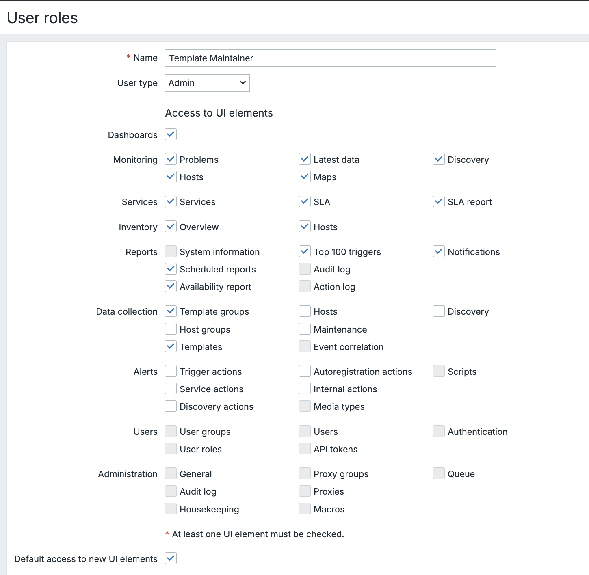
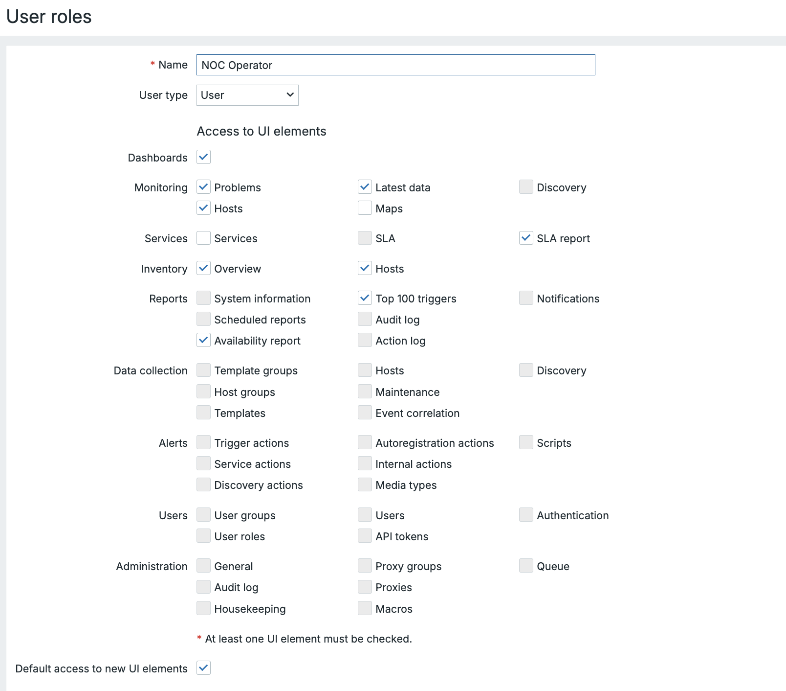

Funções de usuário
O sistema Zabbix User Role, introduzido no Zabbix 5.2, define o que um usuário tem permissão para fazer no frontend do Zabbix e através da API. Ao contrário dos Grupos de Usuários, que controlam a visibilidade dos dados (por exemplo, quais hosts um usuário pode ver e/ou gerenciar), as Funções de Usuário controlam a funcionalidade do aplicativo (quais botões um usuário pode clicar).
A hierarquia de funções
Cada função de usuário, seja ela padrão ou personalizada, baseia-se fundamentalmente em um dos tipos de usuário clássicos (superadministrador, administrador ou usuário). Esse tipo de usuário serve como o privilégio máximo permitido para a função.
Acesso ao menu padrão por tipo de usuário
As funções de usuário podem ser criadas no menu Users → User roles. Ou
podem ser definidas por usuário no menu Usuários → Usuários → "algum
usuário" → Permissões.
Esta tabela ilustra os direitos de acesso padrão concedidos aos usuários com base no seu tipo de usuário inicial antes de serem feitos quaisquer ajustes na função de usuário personalizada .
| Seção de menu | Usuário | Administrador | Super Administrador |
|---|---|---|---|
| Monitoramento | |||
| Painéis de controle | ✅ | ✅ | ✅ |
| Problemas | ✅ | ✅ | ✅ |
| Hospedeiros | ✅ | ✅ | ✅ |
| Dados mais recentes | ✅ | ✅ | ✅ |
| Mapas | ✅ | ✅ | ✅ |
| Descoberta | ✅ | ✅ | |
| Serviços | ✅ | ✅ | ✅ |
| SLA | ✅ | ✅ | |
| Relatório SLA | ✅ | ✅ | ✅ |
| Inventário | |||
| Visão geral | ✅ | ✅ | ✅ |
| Hospedeiros | ✅ | ✅ | ✅ |
| Relatórios | |||
| Informações do sistema | ✅ | ✅ | |
| Relatórios programados | ✅ | ✅ | |
| Relatório de disponibilidade | ✅ | ✅ | ✅ |
| Os 100 principais acionadores | ✅ | ✅ | ✅ |
| Registro de auditoria | ✅ | ✅ | |
| Registro de ações | ✅ | ✅ | |
| Notificações | ✅ | ✅ | |
| Configuração | |||
| Coleta de dados | ✅ | ✅ | |
| Grupos de modelos | ✅ | ✅ | |
| Grupos de acolhimento | ✅ | ✅ | |
| Modelos | ✅ | ✅ | |
| Hospedeiros | ✅ | ✅ | |
| Manutenção | ✅ | ✅ | |
| Correlação de eventos | ✅ | ✅ | |
| Descoberta | ✅ | ✅ | |
| Alertas (ações) | |||
| Ações de acionamento | ✅ | ✅ | |
| Ações de serviço | ✅ | ✅ | |
| Ações de descoberta | ✅ | ✅ | |
| Ações de registro automático | ✅ | ✅ | |
| Ações internas | ✅ | ✅ | |
| Administração | |||
| Tipos de mídia | ✅ | ||
| Scripts | ✅ | ||
| Usuários | ✅ | ||
| Grupos de usuários | ✅ | ||
| Funções de usuário | ✅ | ||
| tokens de API | ✅ | ||
| Autenticação | ✅ | ||
| Geral | ✅ | ||
| Registro de auditoria | ✅ | ||
| Serviço de limpeza | ✅ | ||
| Grupos de proxy | ✅ | ||
| Proxies | ✅ | ||
| Macros | ✅ | ||
| Fila | ✅ |
Personalização de permissões de função
Ao definir uma função personalizada (com base em Admin ou User), o
administrador do Zabbix pode seletivamente revogar ou conceder direitos
específicos dentro do escopo do tipo de usuário base. A personalização é
dividida em três áreas principais:
Elementos da interface do usuário (permissões de acesso ao menu de front-end)
Esta seção controla a visibilidade dos itens de menu. Por padrão, uma função
baseada no tipo Admin pode ver o menu Data collection. Isso permite ocultar
seções de configuração específicas.
- Exemplo de uso: Você pode criar uma função
Adminchamada "Template Editor" que tem permissão para ver e modificar Templates, mas negar acesso à configuração Hosts para evitar alterações acidentais no host.
| Permissão | Descrição |
|---|---|
| Acesso ao front-end | Permite ou nega o acesso a todo o front-end do Zabbix (vs. acesso somente à API). |
| Visibilidade | Alterne o acesso a seções específicas, como Monitoring, Data collection, Reports, ou até mesmo submenus como Trigger Actions ou Hosts. |
Permissões de ação (controle de funcionalidade)
Esta talvez seja a seção mais importante, que define os recursos operacionais do . Essas permissões controlam as ações que um usuário pode executar nos dados existentes, independentemente do menu em que se encontra.
- Exemplo de uso (NOC): Permita que uma função NOC Operator (com base em
User) Acknowledge problems e Close problems manually, mas negue a o direito de Execute scripts para evitar a execução não autorizada de comandos. - Exemplo de uso 2 (Dashboard): Permitir que uma função Manager (com
base em
User) crie e edite painéis para que eles possam personalizar a visualização, mas negar a eles a capacidade de reconhecer problemas.
| Permissão | Descrição |
|---|---|
| Reconhecer problemas | A capacidade de adicionar comentários e reconhecer problemas ativos. |
| Fechar problemas manualmente | A capacidade de forçar o fechamento de um problema, mesmo que o problema subjacente não tenha sido resolvido. |
| Criar e editar painéis | Controla a capacidade de criar e modificar painéis de front-end. |
| Executar scripts | Controla a capacidade de executar scripts globais (por exemplo, comandos remotos, atualizações de inventário). |
Permissões de API
Para fins avançados ou de integração, a função pode especificar quais métodos da
API do Zabbix são acessíveis. Isso é normalmente usado para restringir scripts
personalizados ou integrações apenas às operações de leitura/gravação
necessárias (por exemplo, permitir host.get, mas negar host.create).
Autoridade operacional para tratamento de problemas
A autoridade para gerenciar problemas e responder a incidentes está criticamente ligada aos direitos de acesso de um usuário sobre os Triggers e Host Groups subjacentes, que são regidos por seus User Groups. Essas regras definem os recursos de um usuário nas seções de Monitoramento do front-end do Zabbix:
-
Para reconhecer eventos e adicionar comentários: Para confirmar (eventos) e fornecer comentários sobre problemas, o usuário deve ter pelo menos a permissão de leitura para os acionadores que geraram o evento. Essa ação é puramente informativa e não altera o status principal ou a configuração do problema.
-
Para alterar a gravidade do problema ou fechar problemas: Para alterar a gravidade de um problema ou para fechá-lo manualmente (fechar o problema), o usuário precisa de permissão de leitura e gravação para os acionadores correspondentes. Essas ações afetam o status e o estado do problema e, portanto, necessitam de um nível de autoridade mais alto e mais decisivo.
Cenários práticos de funções de usuário
O fornecimento de exemplos distintos de funções personalizadas ajuda a ilustrar a flexibilidade do sistema.
Cenário 1: função de mantenedor de modelos
Objetivo:
Crie uma função personalizada para um administrador técnico que gerencia modelos, mas não deve modificar as configurações do host ou as definições do sistema.
Função básica:
- Baseado em: Admin
- Objetivo: Limitar a exposição a hosts de produção e, ao mesmo tempo, manter o gerenciamento completo de modelos.
Etapas de configuração:
- Administração → Usuários → Funções do usuário → Criar função
- Geral
- Nome da função:
Mantenedor de modelos - Função básica:
Admin - Acesso ao frontend: ✅ Ativado
- Nome da função:
- Permissões de elementos da interface do usuário
- ✅ Coleta de dados → Modelos
- ✅ Coleta de dados → Grupos de modelos
- ❌ Coleta de dados → Hosts
- ❌ Usuários (seção inteira)
- ❌ Alertas (seção inteira)
- ❌ Administração (seção inteira)
- Permissões de ação
- ❌ Reconhecer problemas
- ❌ Fechar problemas manualmente
- ✅ Criar e editar painéis (opcional, para testes/POCs)
- ❌ Executar scripts
- Permissões de API (exemplos)
- Permitir:
template.get,template.update,template.create - Negar: Chamadas de gerenciamento de host/sistema/usuário (por exemplo,
host.create,user.update, etc.)
- Permitir:
Testes:
- Faça login como usuário: você deve ver Data collection → Templates somente (dentro das áreas de configuração), enquanto Hosts, Alerts, Users e Administration estão ocultos.
- O acesso direto ao URL para seções ocultas deve retornar Permissão negada.
Caso de uso:
Ideal em ambientes com tarefas segregadas, por exemplo, uma equipe mantém modelos enquanto outra lida com a descoberta e a configuração do host.

Cenário 2: função de operador de NOC
Objetivo:
Crie uma função para um operador do Centro de Operações de Rede (NOC) 24 horas por dia, 7 dias por semana, que monitora os problemas e os reconhece, mas não pode alterar a configuração.
Função básica:
- Baseado em: Usuário
- Objetivo: Capacitar os operadores de NOC a lidar com a confirmação de incidentes sem acesso à configuração.
Etapas de configuração:
- Acesse Administration → Funções do usuário → Criar função
- Definir:
- Nome da função:
Operador de NOC - Função básica:
Usuário
- Nome da função:
- Permissões de elementos da interface do usuário (menu 7.4)
- ✅ Monitoring → Painéis / Problemas / Hosts / Dados mais recentes
- ✅ Services → Relatório de SLA
- ✅ Relatórios → Relatório de disponibilidade (se usado)
- ❌ Coleta de dados (seção inteira)
- ❌ Usuários (seção inteira)
- ❌ Alertas (seção inteira)
- ❌ Administração (seção inteira)
- Permissões de ação
- ✅ Reconhecer problemas
- ✅ Fechar problemas manualmente (opcional, ativar somente se o seu fluxo de trabalho exigir)
- ❌ Executar scripts
- Crie e edite painéis (ou ative-os se for necessário ajustar as exibições do NOC)
- Permissões de API (exemplos)
- Permitir:
problem.get,event.acknowledge,trigger.get - Negar: APIs relacionadas à configuração
- Permitir:
Vinculação do grupo de usuários:
Atribua essa função a um grupo de usuários ** com acesso Read a grupos de
hosts específicos (por exemplo, Production Routers, Datacenter Switches).
Isso garante:
- O operador pode visualizar e confirmar apenas os alertas relevantes.
- Sem risco de modificações não autorizadas no sistema.
Caso de uso:
Usado pelas equipes de suporte de primeira linha do que lidam com o reconhecimento e o escalonamento de incidentes durante o monitoramento ao vivo.

Resumo: Função vs. Grupo
!!! info "Info" As funções de usuário do Zabbix e os grupos de usuários trabalham juntos para reforçar a segurança e a usabilidade . As funções definem o que você pode fazer, enquanto os grupos definem o que você pode ver - dando aos administradores um controle refinado sobre a interface ** e o escopo de dados ** em ambientes de monitoramento com várias equipes.
!!! Nota: Desde o Zabbix 7.4, agora existe a opção Action Create and edit
own media disponível. Essa opção permite que os usuários gerenciem suas
próprias mídias, algo que não era possível antes.
É fundamental entender que esses dois sistemas funcionam em conjunto:
- Função do usuário: Controla o aplicativo Zabbix e a interface do usuário. Você pode clicar no menu "Data collection" (Coleta de dados)?
- Grupo de usuários: Controla os dados do Host/Item. Se você clicar em "Data collection" (Coleta de dados), quais hosts você vê?
Um usuário com a função Config Admin verá o menu Data collection, mas se o
grupo de usuários * não tiver permissões para nenhum *Host Groups, ele
verá uma lista de hosts vazia. Essa abordagem em camadas garante tanto a
segurança quanto uma experiência de usuário personalizada.
Conclusão
As funções de usuário do Zabbix e os grupos de usuários juntos formam a base de um modelo de controle de acesso seguro e flexível. As funções de usuário definem o que uma pessoa pode fazer no frontend e na API, moldando os menus, as ações e os privilégios disponíveis. Já os grupos de usuários definem quais dados essa pessoa pode ver, como hosts, modelos e acionadores.
Ao combinar cuidadosamente essas duas camadas, os administradores podem adaptar o Zabbix para corresponder às responsabilidades operacionais reais: desde operadores de NOC somente leitura até mantenedores de modelos completos ou contas de automação. Essa separação de função e visibilidade não apenas fortalece a segurança, mas também cria uma experiência de usuário mais limpa e mais focada para cada função dentro do ecossistema de monitoramento.
Perguntas
- Qual é a principal diferença entre um User Role e um User Group no Zabbix?
- Como a base User Type (User, Admin, Super Admin) limita o que uma função personalizada pode alcançar?
- Por que você pode atribuir grupos de usuários diferentes a usuários que compartilham a mesma função de usuário?
- Como as permissões de API baseadas em funções podem ajudar a reduzir o risco em fluxos de trabalho de automação ou DevOps?